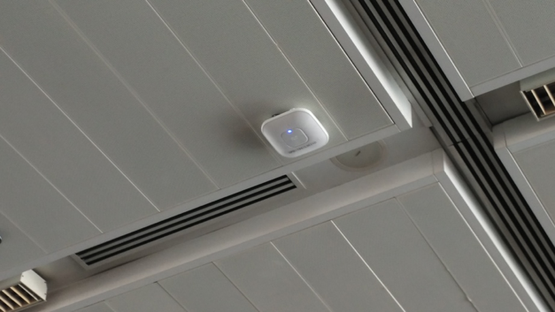
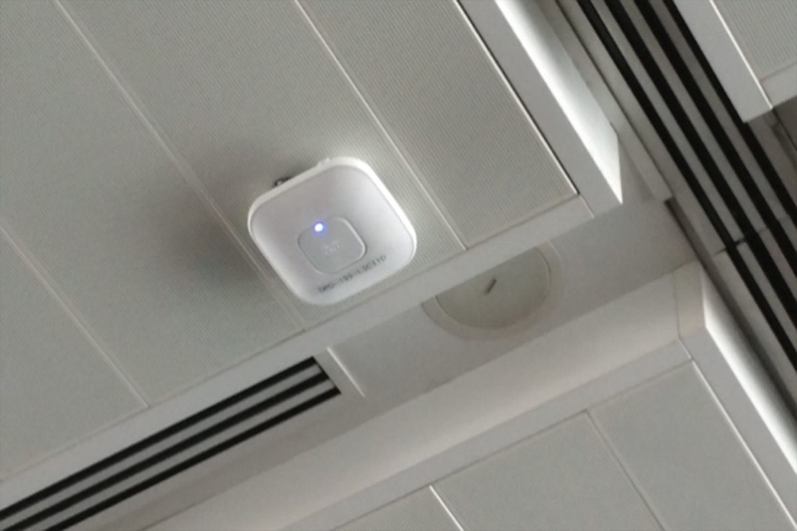
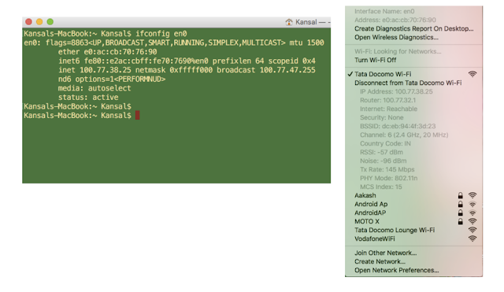
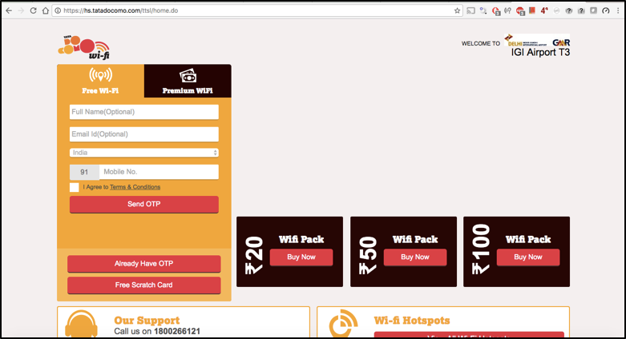
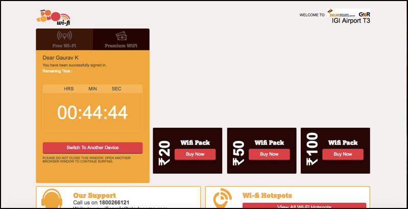
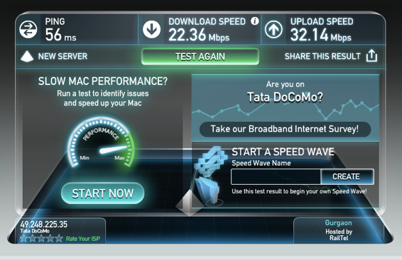
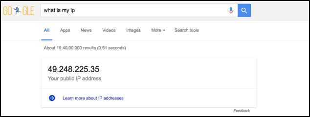
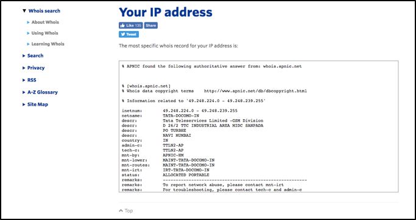

Note — June 2026: This post was written in October 2016. Below things are now out of date:
- Tata Docomo no longer exists. Tata Teleservices' consumer mobile business, including the Tata Docomo brand, was acquired by Bharti Airtel (announced on October 2017) and fully merged on 1 July 2019 — so the "Tata Docomo Wi-Fi" SSID described here doesn't exist anymore.
- The airport now runs its own Wi-Fi. As of late 2025, Delhi airport's free Wi-Fi is provided directly by GMR (the airport operator) under SSIDs like "GMR Free Wi-Fi".
- CGNAT is now routine. The 100.64.0.0/10 "Shared Address Space" (RFC 6598) discussed below was a rare observation in 2016; carrier-grade NAT is now standard practice across most Indian ISPs.
This note is based on published sources. I haven't re-run this analysis on today's network. Read this post as 2016 history, and not the current behavior.
I was at T3, IGI Airport, New Delhi last week and I took the opportunity to analyze the Wi-Fi setup there. I will share my findings in this post.
The access points installed at Terminal 3, IGI Airport, New Delhi, are Cisco-manufactured internal access points with internal antennas, as shown below:


Cisco Access Point Deployment Modes
Cisco access points can be deployed in two modes:
-
Lightweight installation
In this mode, access points establish a secure tunnel to a wireless controller and forward all user traffic to it. The controller then applies policy and processes traffic accordingly. This mode is recommended for large or enterprise deployments.
-
Autonomous installation
In this mode, each access point also functions as its own controller, processing traffic according to local policy. This mode suits small deployments.
I roamed to various corners of the floor after connecting to the wireless network and did not face any connection drops or re-authentication issues. This kind of seamless roaming is typically possible only in a controller-based deployment, which leads me to believe that the wireless setup at T3, IGI Airport, New Delhi, is controller-based.
SSID and Network Details
The SSID announced at T3 was Tata Docomo Wi-Fi, broadcast as an open SSID (Service Set Identifier) — so the carrier name itself made the service provider obvious. After connecting to the SSID, all user traffic was redirected to a captive portal requesting OTP-based authentication; only after successful authentication was the user allowed to access the network (internet).

From the screenshot above, we can pull out some useful technical details — network segment, signal strength, interference, and the 802.11 protocol in use:
| Parameter | Value | Why it matters |
|---|---|---|
| IP addressing | 100.77.32.0/20 | Falls within the 100.64.0.0/10 block, reserved by IANA as "Shared Address Space" per RFC 6598 — i.e., carrier-grade NAT space. |
| 802.11 standard | 802.11n, 2.4 GHz, channel 6, 20 MHz width | 802.11n supports both 2.4 GHz and 5 GHz; this connection used 2.4 GHz. |
| PHY connection speed | 145 Mbps, MCS Index 15 | A theoretical link rate, not actual throughput — see the speed test results further down. |
| Signal strength (RSSI) | -57 dBm | Strong signal by typical Wi-Fi standards. |
| Noise floor | -96 dBm | Very low — interference was negligible, expected in a confined airport environment with limited reach. |
Authentication
The guest SSID used web-auth type authentication — meaning it was open to anyone, with all user traffic redirected to a captive portal that required OTP-based authentication before granting network access.

The captive portal site, hs.tatadocomo.com/ttsl/home.do, was hosted on public IP 14.194.199.10 but only reachable while connected to the airport Wi-Fi. The portal was served over SSL/TLS, a good security practice for a page collecting user information.

After successful authentication, users get 45 minutes of free Wi-Fi access — in my case, the screenshot below shows 44 minutes 44 seconds remaining. Beyond that, access requires purchasing a coupon directly through the captive portal, available in ₹20, ₹50, or ₹100 denominations. The blank space visible in the voucher screenshot is where an ad would normally appear; it was blocked by an ad-blocker extension.
Speed Test and Uplink Information
Earlier, I noted a 145 Mbps connection speed — but that's a theoretical PHY rate derived from Tx/Rx power, RSSI, noise, modulation, and other factors. The actual throughput, measured with a speed test utility, is shown below:

The speed test recorded 22 Mbps download and 32 Mbps upload — comfortably above the average broadband speed in India at the time.

Looking at the uplink used for the Wi-Fi at T3, my traffic was egressing through Tata Docomo's network, with a public IP of 49.248.225.35.

This confirms that Tata Docomo provided the end-to-end wireless network at T3 — access points, controller, and internet uplink — as a single managed service.